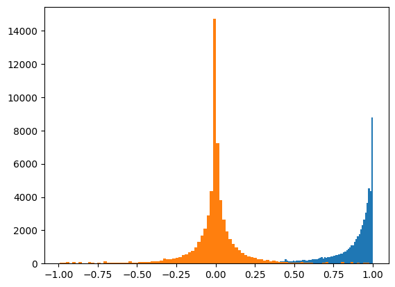
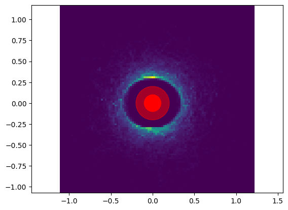
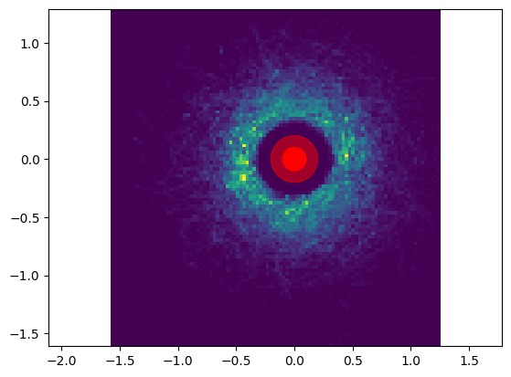
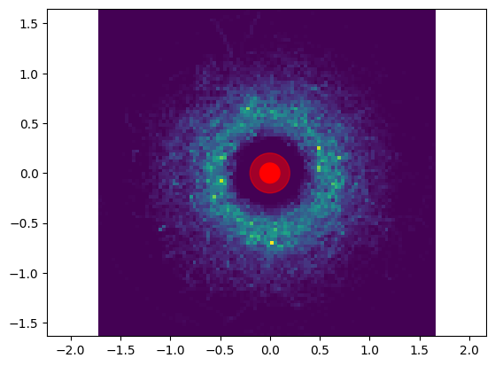
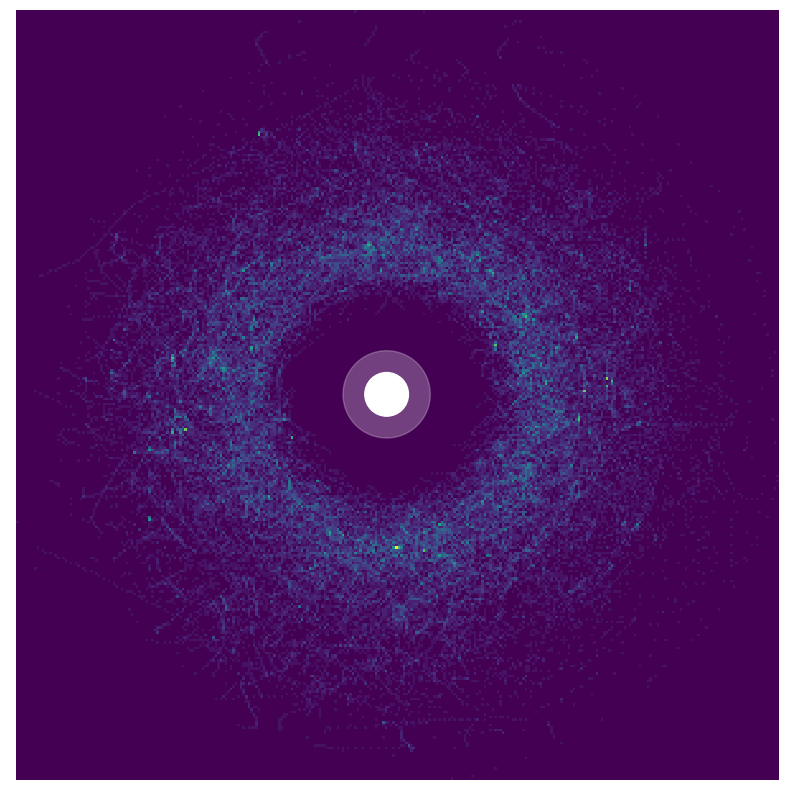
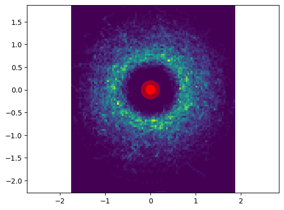
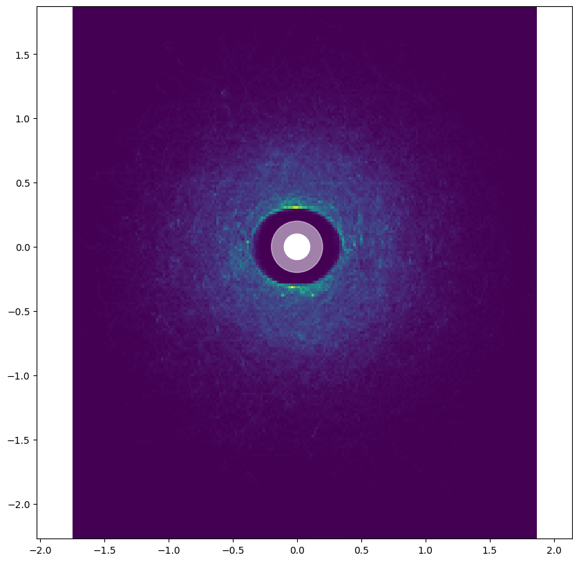
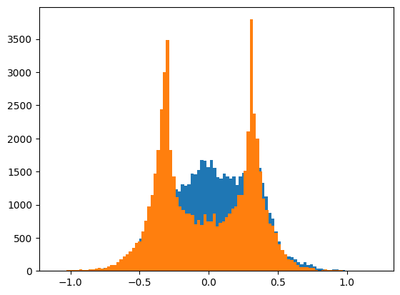
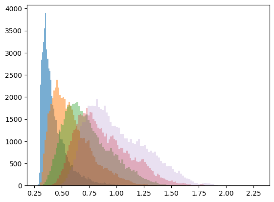
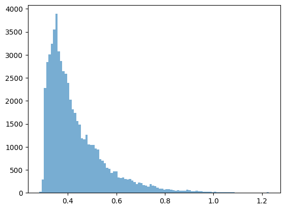

Rollouts#
Internal notebook to show how to get rollouts from experimental runs and from gym/imitation
[1]:
from navground import sim
sensor = sim.load_state_estimation("""
type: Discs
number: 5
range: 5.0
max_speed: 0.12
max_radius: 0.1
""")
scenario = sim.load_scenario("""
type: Cross
agent_margin: 0.1
side: 4
target_margin: 0.1
tolerance: 0.5
groups:
-
type: thymio
number: 20
radius: 0.1
control_period: 0.1
speed_tolerance: 0.02
color: gray
kinematics:
type: 2WDiff
wheel_axis: 0.094
max_speed: 0.12
behavior:
type: HL
optimal_speed: 0.12
horizon: 5.0
tau: 0.25
eta: 0.5
safety_margin: 0.1
state_estimation:
type: Bounded
range: 5.0
""")
[2]:
from navground_learning.env import GymAgentConfig
import numpy as np
duration = 60.0
runs = 100
time_step = 0.1
config = GymAgentConfig()
Using imitation#
[3]:
import time
from imitation.util.util import make_vec_env
from imitation.data import rollout
from imitation.data.wrappers import RolloutInfoWrapper
from navground_learning.utils import get_expert
start = time.monotonic_ns()
expert = get_expert(config)
rng = np.random.default_rng(0)
venv = make_vec_env("navground",
rng=rng,
post_wrappers=[lambda env, _: RolloutInfoWrapper(env)],
env_make_kwargs={
'scenario': scenario,
'sensor': sensor,
'time_step': time_step,
'max_duration': duration,
'config': config,
},
parallel=False,
n_envs=1)
mid = time.monotonic_ns()
rollouts = rollout.rollout(
expert, venv,
rollout.make_sample_until(min_timesteps=None, min_episodes=runs),
rng=rng)
end = time.monotonic_ns()
transitions = rollout.flatten_trajectories(rollouts)
len(transitions.acts), (end - start) / 1e9 # , (mid - start) / 1e9
[3]:
(60000, 9.30589725)
Comparison#
navground can store data from multiple agents
navground can dump and then load data to/from HDF5
navground could run an experiment over multiple processes with exp.run_mp (dump->load->join data)
Let’s try with the multiprocessing
[11]:
exp.save_directory = ''
exp.name = 'multi'
start = time.monotonic_ns()
with tqdm() as bar:
exp.run_mp(number_of_processes=10, keep=True, number_of_runs=runs, start_index=0, bar=bar)
end = time.monotonic_ns()
rollouts = get_trajectories_from_experiment(exp)
transitions = rollout.flatten_trajectories(list(rollouts))
len(transitions.acts), (end - start) / 1e9
[11]:
(60000, 5.74437575)
[13]:
exp.runs[0].records
[13]:
{'actions/0': <Dataset: shape (600, 2), dtype float64>,
'observations/0/ego_target_direction': <Dataset: shape (601, 2), dtype float64>,
'observations/0/ego_target_distance': <Dataset: shape (601, 1), dtype float64>,
'observations/0/position': <Dataset: shape (601, 5, 2), dtype float64>,
'observations/0/radius': <Dataset: shape (601, 5), dtype float64>,
'observations/0/valid': <Dataset: shape (601, 5), dtype uint8>,
'observations/0/velocity': <Dataset: shape (601, 5, 2), dtype float64>,
'rewards/0': <Dataset: shape (600,), dtype float64>,
'times': <Dataset: shape (600,), dtype float64>}
[14]:
from matplotlib import pyplot as plt
[15]:
acts = np.asarray(exp.runs[0].get_record("actions/0"))
times = exp.runs[0].times
plt.plot(times, acts[:, 0])
[15]:
[<matplotlib.lines.Line2D at 0x30a0d64d0>]

[25]:
plt.hist(transitions.acts[:, 0], bins=100);
plt.hist(transitions.acts[:, 1], bins=100);

[109]:
ps = transitions.obs.get('position')
plt.hist2d(ps[:, 0, 0], ps[:, 0, 1], bins=100);
c = plt.Circle((0, 0), 0.1, color='r')
c2 = plt.Circle((0, 0), 0.2, color='r', alpha=0.5)
plt.gca().add_patch(c)
plt.gca().add_patch(c2)
# plt.xlim(-2, 2)
# plt.ylim(-2, 2)
plt.axis('equal');

[110]:
ps = transitions.obs.get('position')
plt.hist2d(ps[:, 1, 0], ps[:, 1, 1], bins=100);
c = plt.Circle((0, 0), 0.1, color='r')
c2 = plt.Circle((0, 0), 0.2, color='r', alpha=0.5)
plt.gca().add_patch(c)
plt.gca().add_patch(c2)
plt.axis('equal');

[111]:
ps = transitions.obs.get('position')
plt.hist2d(ps[:, 2, 0], ps[:, 2, 1], bins=100);
c = plt.Circle((0, 0), 0.1, color='r')
c2 = plt.Circle((0, 0), 0.2, color='r', alpha=0.5)
plt.gca().add_patch(c)
plt.gca().add_patch(c2)
plt.axis('equal');

[131]:
plt.figure(figsize=(10,10))
ps = transitions.obs.get('position')
plt.hist2d(ps[:, 3, 0], ps[:, 3, 1], bins=300);
c = plt.Circle((0, 0), 0.1, color='w')
c2 = plt.Circle((0, 0), 0.2, color='w', alpha=0.25)
plt.gca().add_patch(c)
plt.gca().add_patch(c2)
plt.axis('equal');
plt.axis('off');
plt.savefig('/Users/jerome.guzzi/Desktop/occhio.png')

[113]:
ps = transitions.obs.get('position')
plt.hist2d(ps[:, 4, 0], ps[:, 4, 1], bins=100);
c = plt.Circle((0, 0), 0.1, color='r')
c2 = plt.Circle((0, 0), 0.2, color='r', alpha=0.5)
plt.gca().add_patch(c)
plt.gca().add_patch(c2)
plt.axis('equal');

[121]:
plt.figure(figsize=(10,10))
ps = transitions.obs.get('position')
plt.hist2d(ps[..., 0].flatten(), ps[..., 1].flatten(), bins=200);
c = plt.Circle((0, 0), 0.1, color='w')
c2 = plt.Circle((0, 0), 0.2, color='w', alpha=0.5)
plt.gca().add_patch(c)
plt.gca().add_patch(c2)
plt.axis('equal');

[104]:
plt.hist(ps[:, 0, 0], bins=100);
plt.hist(ps[:, 0, 1], bins=100);

[50]:
dist = np.linalg.norm(ps, axis=-1)
[60]:
plt.hist(dist[:, 0], bins=100, alpha=0.6);
plt.hist(dist[:, 1], bins=100, alpha=0.5);
plt.hist(dist[:, 2], bins=100, alpha=0.4);
plt.hist(dist[:, 3], bins=100, alpha=0.3);
plt.hist(dist[:, 4], bins=100, alpha=0.2);

[61]:
plt.hist(dist[:, 0], bins=100, alpha=0.6);

[64]:
np.min(dist, axis=0)
[64]:
array([0.28266742, 0.30085767, 0.32797711, 0.37188516, 0.46172007])
[67]:
np.max(dist, axis=0)
[67]:
array([1.22844569, 1.6702313 , 1.7913619 , 1.83639798, 2.29400928])
[68]:
np.mean(dist, axis=0)
[68]:
array([0.43358802, 0.59044185, 0.73869555, 0.87905538, 1.00464861])
[ ]: